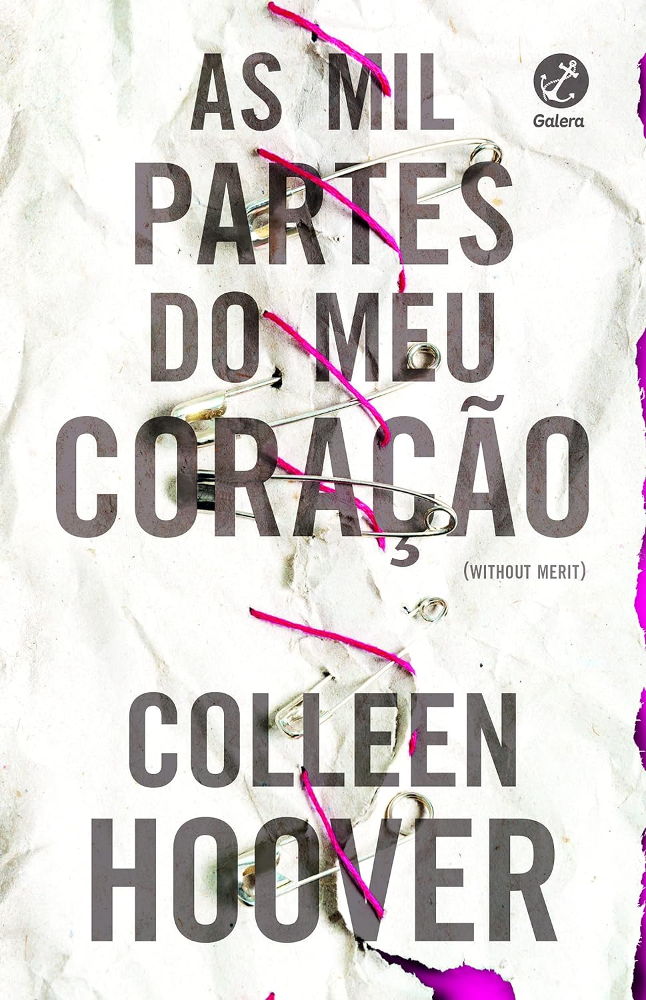
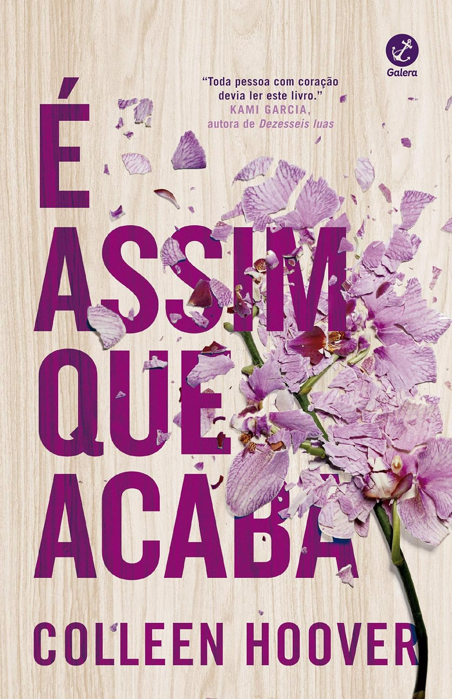

Sinopse:Merit Voss está cansada de guardar os segredos de sua família e decide que chegou a hora de desaparecer. Mas antes de sumir do mapa, ela vai revelar um por um, tudo que a família vem guardando por anos. A cerca branca ao redor da sua casa é a única coisa normal na vida de Merit.
Autora: Colleen Hoover
Editora: Galeria

Sinopse: No limiar entre a vida e a morte, depois de uma vida cheia de desgostos e carregada de remorsos, Nora Seed dá por si numa biblioteca onde o relógio marca sempre a meia-noite e as estantes estão repletas de livros que se estendem até perder de vista. Cada um desses livros oferece-lhe a hipótese de experimentar uma outra vida, de fazer novas escolhas, de corrigir erros, de perceber o que teria acontecido se tivesse escolhido um caminho diferente. As possibilidades são infinitas e vários horizontes se abrem à sua frente.
Autor: Matt Haig
Editor: TopSeller
Sinopse:Matt, o irmão gêmeo do doador, se recusa a acreditar que Eric se suicidou. Quando Leah o procura, eles descobrem que ambos têm sonhos semelhantes que podem ter pistas do que realmente aconteceu a Eric. Enquanto tentam desvendar esse mistério, Matt e Leah se apaixonam e não querem correr o risco de perder um ao outro.
Autor: C.C.Hunter
Editora: Jangada

Sinopse: Uma obra polifônica, marcada pelas narrativas das irmãs Bibiana e Belonísia, e de uma entidade encantada, vozes femininas que expressam memórias coletivas e atribuladas de desigualdades raciais, sociais e de gênero, e também evocam as resistências ancestrais dos povos quilombolas, suas lutas e ligações com a terra.
Autor: Itamar Vieira Junior
Editora: TodaVia

‘É assim que acaba’, de Hoover, é o campeão de vendas do Brasil e dos Estados Unidos. A continuação da obra, ‘É assim que começa’ vem em segundo lugar.
Nossa História
Criado em 2023 pelas Estudantes Jamilli e Renata. faça seu
cadastro!